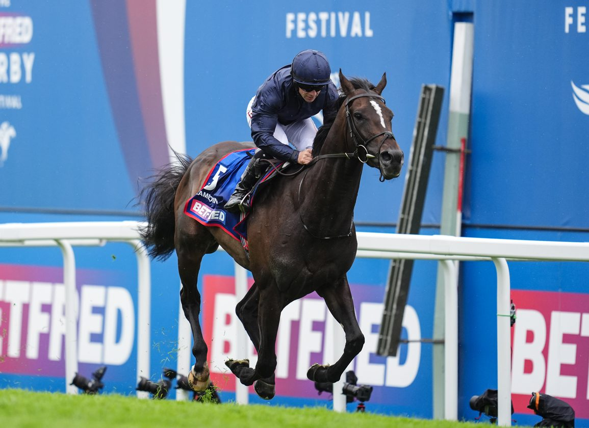

La Coronation Cup escala a un millón de libras y vuelve al sábado del Derby de Epsom
La Coronation Cup arrancará la tarde grande del Derby Festival de Epsom Downs este sábado 31 de mayo con una nueva dotación de un millón de libras esterlinas, más del doble de las 450.000 libras que repartió en su edición anterior. El Jockey Club ha confirmado además a Coolmore como patrocinador principal de la…

Foto: thoroughbreddailynews.com
La Coronation Cup arrancará la tarde grande del Derby Festival de Epsom Downs este sábado 31 de mayo con una nueva dotación de un millón de libras esterlinas, más del doble de las 450.000 libras que repartió en su edición anterior. El Jockey Club ha confirmado además a Coolmore como patrocinador principal de la prueba, decisión que vuelve a colocar al clásico para mayores de cuatro años en su tradicional ranura del sábado, después de varios cursos compartiendo cartel con otras pruebas.
La Coronation Cup es una de las pruebas más históricas del calendario británico: Grupo I sobre una milla y media (2.420 metros) reservado a stayers consagrados, con una nómina de ganadores que ha incluido a algunos de los mejores caballos de mediodistancia de Europa en las últimas décadas. La reubicación al sábado del Derby busca recuperarle protagonismo y darle el peso que la dotación ahora también acompaña.
El movimiento se enmarca en una reorganización integral del Derby Festival, que también ha elevado la dotación del propio Betfred Derby a los dos millones de libras. El programa del sábado quedará así concentrado en una secuencia muy fuerte: Coronation Cup, Dash y Derby se correrán de forma encadenada, en busca de recuperar la centralidad mediática que la cita perdió frente al Festival de Royal Ascot en los últimos años.
La novedad llega además poco antes de un fin de semana cargado en Europa, con el Qatar Prix du Jockey Club el mismo domingo en Chantilly y el Belmont Stakes una semana después en Saratoga. Para la afición británica, la nueva Coronation Cup vuelve a ser un punto de cita firme en su agenda y un escaparate de élite para los stayers que apuntan al segundo semestre internacional.
— Redacción de Galope al Día